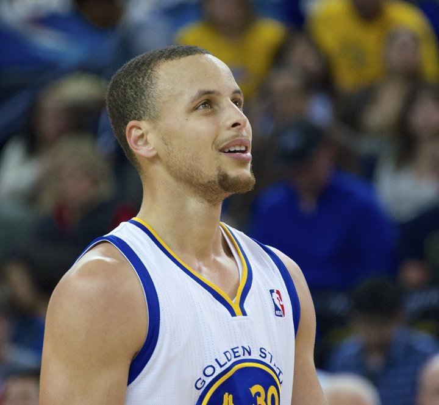

HoopThink · The Intelligence Layer of BasketballEdition No. 003
The24
Everything that happened in basketball in the last 24 hours, read the way a scout reads it.
Thursday, October 29, 2026Covering Wednesday, Oct. 2812 NBA games · NCAAM + NCAAW exhibitions · WNBA Finals G6 today
Final
GSW119
MIN114
Curry 44 · 16-16 FT
Final
DEN104
NO91
Jokic 21-13-10
Final / OT
SA117
UTA111
Wembanyama 36-14
Final
NYK133
CHI127
Brunson 38
Final
OKC96
DAL120
Flagg 26-8
Final
MIA129
ATL117
Giannis 24-18
Final
PHI114
IND109
Maxey 27
Final
WAS111
CLE121
Mobley 24-12
Final
CHA89
DET97
Cunningham 30
Final
HOU132
MIL100
VanVleet 24
Final
ORL99
TOR129
Barnes 28
Final
LAL103
LAC87
Grimes 23
NCAAM · Exh / OT
UCF76
No. 23 UK90
12-1 OT run
NCAAM · Exhibition
UIC66
No. 3 ILL101
7 in double figures
NCAAW · Exhibition
Marian39
IND87
Hare 18 · 6-10 3PT
EuroLeague · R8
Hapoel TA118
Efes88
Blakeney 35 · 8-9 3PT
The Game · Minneapolis
Night One Without Ant. Steph Goes 16-for-16 and Drops 44.
Minnesota opened a two-month stretch without Anthony Edwards, and Stephen Curry made sure it started with a lesson: you can't foul your way out of guarding the best shooter alive.
By The Westview Group · Contributor: Keil Moore

Stephen Curry, Warriors. File photo.
44 PTS11-27 FG6-16 3PT16-16 FT8 REB6 AST2 STL31 MIN
The news landed before tip: Anthony Edwards needs arthroscopic surgery on his right knee and is expected to miss about two months. He was averaging 33.3 points through four games. Two nights after his 47 in Cleveland, the Wolves had to find out who they are without him.
Golden State answered first. Curry scored a season-high 44 in 31 minutes and never missed at the line, 16-for-16. The Warriors led by as many as 24. Warriors 119, Timberwolves 114, and Golden State has won two straight after an 0-3 start.
The scouting read: Curry made 6 of 16 from deep, which by his standard is an average night. The 16 free throws turned it into a 44. When a defense keeps sending a 90% shooter to the line, it's arriving late and recovering with its hands instead of its feet. Without Edwards' point-of-attack size, Minnesota had nobody to stay attached.
Rookie Yaxel Lendeborg backed him with 26 points on 11-of-20 and 9 boards, his second big game in three nights. Jonathan Kuminga scored 20 against the team that drafted him seventh overall. Jaden McDaniels and Terrence Shannon Jr. added 19 apiece, and Minnesota cut it to 116-112 late before McDaniels missed two threes in the final minute.
Scout's Note · Who runs it now
LaMelo Ball went 3-of-11 for 8 points, 2-of-8 from three. With Edwards out, he's the primary creator, and that line is the problem Chris Finch has to solve for the next two months. The Wolves still got 58 from Kuminga, McDaniels and Shannon. That's a committee, not an engine. Minnesota is 3-2 and has lost two straight. Watch the half-court shot quality, not the record.
Nikola Jokic posted 21 points on 8-of-13, 13 rebounds and 10 assists. It's his 200th regular-season triple-double, second-most in NBA history. Jamal Murray added 23 with five threes, Aaron Gordon 15 and 11.
Denver led 37-18 after one and played only nine guys. New Orleans shot 7-of-30 from three and is 0-4 under Jamahl Mosley. Zion Williamson's 25 on 10-of-14 was the only answer.
Victor Wembanyama scored 36 on 14-of-25 with 14 rebounds, 5 assists, 3 steals and 2 blocks. Twenty-one came in the first half. He missed a turnaround at 105-105 with 31.9 seconds left, then San Antonio opened overtime on a 12-0 run. Three straight wins, 3-2.
Keyonte George had a season-high 31 for Utah. Rookie Darryn Peterson took a Wembanyama elbow in the first quarter, left with a bloody nose, came back and scored 18 on 7-of-7 at the line.
Valkyries lead 3-2 · 12:30 PM ET · State Farm Arena
Here's the swing stat. Through Games 1-3, Reese scored 65 points on 22-of-39. In Games 4 and 5: 15 points on 4-of-20. The Dream are 15-0 this season when she makes a three, and they turned it over 35 times across the last two games.
It's a sellout anyway, about 17,000 at midday, per the Dream. A Golden State win ends the first Game 6 in Finals history as a title in Year Two. An Atlanta win sends it to Game 7 Saturday in San Francisco.
📉 Thunder lose for the first time. OKC went 5-of-32 from three (15.6%) without four rotation players. Cooper Flagg 26 and 8 assists; Dallas is 3-2, over .500 for the first time in the Flagg era. Kyrie Irving scored 15 in his first regular-season home game since his March 2025 ACL tear. Mavericks 120, Thunder 96. AP via KRMG
🗽 Jalen Brunson, 38 on 13-of-25 with six threes. The Knicks erased a 19-point second-half deficit, won the fourth 43-31 and hit 22 of 48 threes. Knicks 133, Bulls 127. Norman Powell had 30 for Chicago. Recap
🔥 Miami finally wins. Giannis Antetokounmpo 24 and 18 boards, his first win in a Heat uniform. Bam Adebayo 24. Miami shot 53% with 70 points in the paint. Heat 129, Hawks 117. WSVN
🧊 Tyrese Maxey, 27, with two threes in the last 90 seconds after Indiana won the third 36-13. LeBron James: 13 points, 10 assists. 76ers 114, Pacers 109; Philly is 4-1. Pascal Siakam had 26 and 11 before fouling out. AP via Yahoo
🎯 Evan Mobley, 24 and 12 with a career-best five threes on six tries. Cleveland closed on a 9-0 run from down 105-104. That's 17 straight over Washington. AJ Dybantsa scored 19 on 8-of-12 in his NBA debut. Cavaliers 121, Wizards 111. AP via Yahoo
⚙️ Cade Cunningham, 30 and 7 assists; Brandon Miller answered with 31 and 12 for Charlotte. Detroit opened the third on a 16-5 run. Pistons 97, Hornets 89; Detroit is 4-1. AP via WDIV
💜 Lakers win without Luka. Quentin Grimes 23 and 4 steals, Collin Sexton 21 off the bench. The Clippers turned it over 24 times and lost the second quarter 31-6. Lakers 103, Clippers 87. Deadspin
🚀 Rockets 132, Bucks 100 without Sengun. Fred VanVleet 24, Amen Thompson 23, Kevin Durant 18 with 3 blocks. Houston shot 54.7% and 17-of-38 from three. Deadspin
🦖 Scottie Barnes, 28 on 11-of-17 with 3 steals and 2 blocks; RJ Barrett 25, 9 and 6. Raptors 129, Magic 99, no Kawhi needed. Raptors Republic
🌍 EuroLeague: Antonio Blakeney hung 35 on Anadolu Efes with 8-of-9 from three. Hapoel Tel Aviv 118, Efes 88. Jonas Valanciunas went for 17 and 11 as Zalgiris won at Virtus Bologna. Eurohoops
Film Room
The box-score lines nobody's talking about
5/32
Oklahoma City from three in Dallas, 15.6%. Dallas made 16. Depth injuries show up first in shot quality, and OKC is down four rotation players.
31-6
The Lakers' second quarter against the Clippers. Clippers came in averaging a league-worst 23.3 turnovers and gave it away 24 times.
70
Miami's points in the paint in Atlanta. Giannis plus Bam is a downhill problem when the floor is spaced right.
12-0
San Antonio's run to open overtime in Utah. Game over in under three minutes of the extra period.
22/48
Knicks from three in Chicago. That's 66 points from deep, and it's how you erase 19 on the road.
2,384
Career shots it took Daniel Gafford to make his first three-pointer. It came Wednesday against OKC.
The Pipeline
NCAAM · NCAAW · Recruiting · Rookies
NCAAM · Lexington, Ky.
No. 23 Kentucky 90, UCF 76 (OT, exh.)
Regulation ended 71-71 after a Kentucky jumper answered UCF's 71-69 lead with five seconds left. Then the Wildcats closed overtime on a 12-1 run. Dior Johnson led UCF with 22. Elsewhere: No. 3 Illinois beat UIC 101-66 with seven in double figures, led by Tomislav Ivisic's 14, and No. 11 Louisville beat Mercyhurst 71-39 behind Flory Bidunga's 19 and 9 on 9-of-13. Louisville won the paint 56-14 while going 2-of-13 from deep.
Kenzie Hare scored 18 on 6-of-10 from three. Indiana hit 12 threes and won the glass 50-35. Also Wednesday: Texas Tech's Jalynn Bristow, who led the Big 12 with 69 blocks last season, made the Cheryl Miller Award watch list. Opening day is Monday, Nov. 2.
Hillgrove (Powder Springs, Ga.) forward Asa Montgomery, a 6-foot-7 senior, committed to Duke on Wednesday after official visits to Georgia Tech, UConn, LSU and North Carolina. He joins Kager Knueppel and Luke Paul in Duke's 2027 class. Prolific Prep (Fort Lauderdale) center Lewis Uvwo, 6-foot-10 in the 2027 class, picked Providence and Bryan Hodgson over Baylor, Kentucky and Cal. Providence beat Kentucky and Baylor for a 6-10 center. In this market, that's a recruiting pitch worth studying.
Nine points in the first quarter of his debut, the most by a Wizards rookie in a debut since at least 1996-97, per Sportradar. Eight-of-12 says the shot selection was mature on night one. He led the team in scoring with Trae Young and Anthony Davis on the floor. The next step is what every young wing faces: staying efficient once the scouting report catches up.
The Business
Front offices · eligibility · the money side of the game
NCAAM · LSU
A Judge Clears RJ Luis, for Now
A Baton Rouge judge granted RJ Luis a temporary injunction Wednesday. His attorney says it bars the SEC from penalizing LSU if it rosters him. Luis was Big East Player of the Year at St. John's and signed NBA contracts in 2025. He could be available for games Nov. 3, 6 and 9; a preliminary-injunction hearing is set for Nov. 13. LSU hasn't said whether it will play him.
Same week, different courthouse: on Oct. 27 the NCAA asked the Kentucky Court of Appeals for emergency relief from a Jefferson Circuit Court injunction that lets 29 athletes play, Louisville's Seth Trimble and L.J. Wells among them. Responses are due Nov. 6.
Monday it was Auburn's GM. Wednesday it's a judge in Baton Rouge and an appeals court in Kentucky. A week before tip-off, eligibility is being decided state by state, injunction by injunction.
That's not a rulebook, it's a map. A player cleared in Louisiana and a player blocked somewhere else can have the same résumé. Coaches can't build a rotation on a hearing date. The NCAA needs one written standard for former pros and returning players, and it needs it before the next opener, not after the next ruling.
The moments, the noise, the stuff you'll see on your timeline
Chicago · Halftime
Tre Jones From Just Inside Half Court
Before the Knicks' comeback, Tre Jones beat the halftime horn from just inside midcourt to put Chicago up 62-56. It was the best shot of the night, and the Bulls still lost.
No. 15 Gonzaga beat NAIA Lewis-Clark State in a charity exhibition for Spokane wildfire victims. LCSC coach Austin Johnson had Gonzaga send the Warriors' $5,000 game check to the Karen Worthy Memorial Wildfire Grant. Small-college programs live on those checks. Respect.
Atlanta Sold It Out at Lunchtime. That's Not the Point.
The Dream say about 17,000 are coming to a 12:30 p.m. Game 6. Their owners also sent fans an open letter saying the league was slow to act on scheduling concerns they raised two months ago. A sellout covers for a bad decision; it doesn't fix it. The WNBA needs Finals venues locked before the playoffs start, written into the bracket, with no building conflicts left to chance.